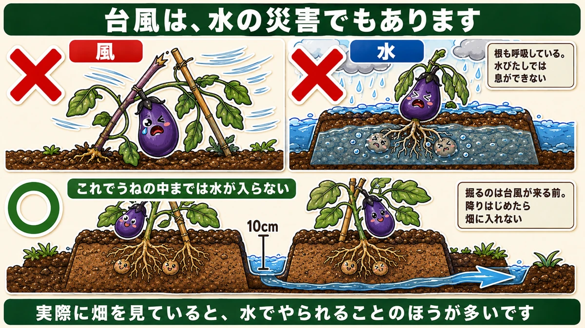
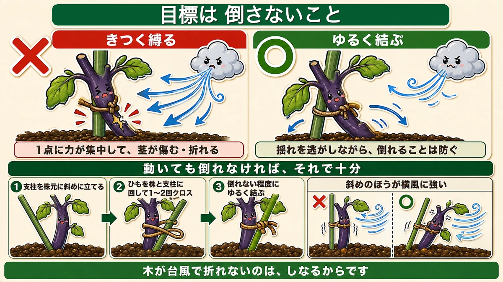
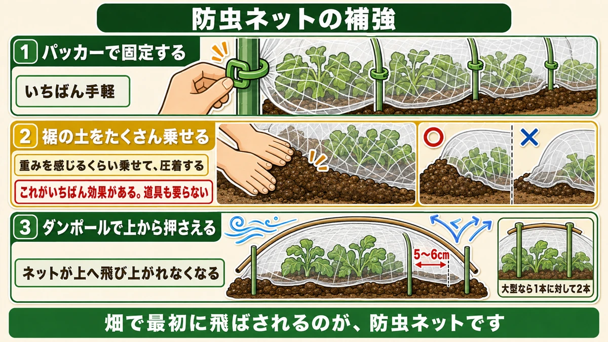
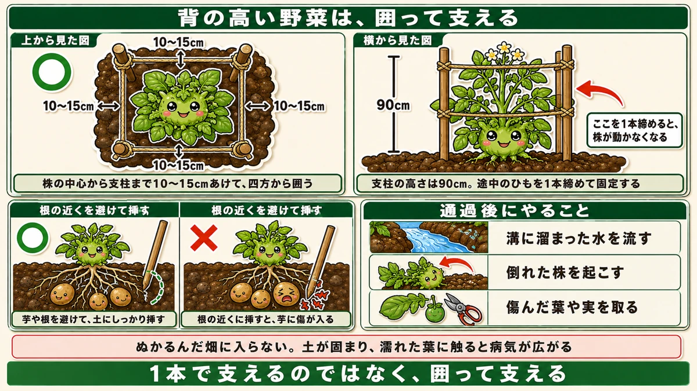

台風でも、きつく縛ってはいけません🌀 動いても倒れなければいい

🗨️「台風が来る。何をすればいいのか分からない」
🗨️「しっかり固定したのに、株が傷んだ」
🗨️「風は防いだけど、水で全部だめになった」
どうも、8150（えいこう）です🌱 家庭菜園歴8年、理科の教員免許を持っていて、有機・無農薬で野菜を育てています。
台風の対策は、★来てからでは何もできません。前の日にできることが全部です。
先に、この記事でいちばん言いたいことを2つ言っておきます。
★ひとつ。台風でも、きつく縛ってはいけません。
★ふたつ。台風は、風だけでなく水の災害です☺️

★★台風は、水の災害でもあります
倒れなくても、やられます
台風というと、まず風を思い浮かべます。倒れる、折れる、飛ばされる。
でも★実際に畑を見ていると、水でやられることのほうが多いです。
- うねの中まで水が浸かる
- 根が水の中で息ができなくなる
- そこから根腐れが始まる
前に、根も呼吸しているという話をしました。★水びたしの土では、根は息ができません。
★うね間に、10cmの溝を掘る
だから、最初にやるのはこれです。
★うねとうねのあいだに、深さ10cmほどの溝を掘ってください。
これだけで、★うねの中までは水が入らなくなります。
前に梅雨の話をしたとき、排水路と高うねの話をしました。★あれの、急ぎ版だと思ってください。
経験から出てきた数字です
「10cmで足りるのか」と思われるかもしれません。
私が読んだ農家さんは、★過去の豪雨でうねの中まで水が浸かった経験から、この作業を欠かさないようにしているそうです。
★実際にやられた人が続けている作業には、重みがあります。
そして、この作業は★台風が来る前にしかできません。降りはじめてから掘ろうとしても、ぬかるんだ畑には入れません。
★★きつく縛ってはいけません
つい、固定したくなります
風の対策です。ここに大事な原則があります。
台風が来ると聞くと、★とにかくがっちり固定したくなります。
私も最初はそうでした。ひもをぎゅうぎゅうに締めて、これで大丈夫だろうと。
★間違いでした。
★誘引のときと、同じです
前に誘引の話をしたとき、こうお伝えしました。
★株側はゆるく、支柱側はきつく。
★台風のときも、まったく同じです。

★動いても、倒れなければいい
考え方を変えてください。
★目標は「動かさないこと」ではありません。「倒さないこと」です。
- きつく縛る → 風で揺すられたとき、その1点に力が集中して★茎が傷む・折れる
- ★ゆるく結ぶ → 揺れを逃がしながら、倒れることは防げる
★動いても倒れなければ、それで十分です。
木が台風で折れないのは、しなるからです。★固いものほど折れます。
結び方
具体的にはこうします。
- ★支柱を、株元に斜めに立てる（春の仮支柱と同じ要領）
- ★ひもを株と支柱に回して、1〜2回クロスさせる
- ★倒れない程度に、ゆるく結ぶ
支柱を斜めに立てるのは、★まっすぐより横風に強いからです。合掌式の考え方と同じですね。
★防虫ネットの補強、3段階
ネットは、いちばん飛びます
畑で最初に飛ばされるのが、防虫ネットです。
普通の風なら剥がれません。★でも台風は別です。
補強を3段階でお話しします。上に行くほど強くなります。

①パッカーで固定する
★パッカーという、ネットを支柱に留める道具があります。
ホームセンターに置いてあります。★これがいちばん手軽です。
②★★裾の土を、たくさん乗せる
そして★これがいちばん効きます。
普段、虫対策でネットを張るときは、★裾に土を軽く乗せるだけだと思います。隙間が空かなければいいので、それで十分です。
台風のときは違います。
★重みを感じるくらい、たくさん土を乗せてください。
そして★上から押さえて圧着します。
★これだけで、どんな風が来ても剥がれません。私が読んだ農家さんも「これがいちばん効果がある」と書いていました。
道具も要りません。★土を乗せるだけです。
③★ダンポールで、上から押さえる
さらに強くしたいときです。
★ダンポール（トンネル用の細い支柱）を、もともとの支柱から5〜6cm離した位置に差し込みます。
そして★ネットの上から押さえる形にします。
こうすると、★ネットが上へ飛び上がれなくなります。風はネットを持ち上げようとしますが、上から押さえがあるので動けません。
★大型の台風なら、1本に対して2本差し込むとさらに強くなります。
★★背の高い野菜は、四方を囲う
じゃがいも、ネギ、里芋
背が高くなる野菜は、支柱1本では支えきれません。
- じゃがいも（40cmくらいまで伸びます）
- ネギ
- 里芋
これらは★四方を囲って支えます。

やり方
- ★90cmの支柱を、4本立てる
- ★株から10〜15cmの間隔をあける
- ★四方をひもで囲む
- ★株が真ん中に来るようにする
前にスナップエンドウのところで、★行灯（あんどん）式という組み方をお話ししました。あれと同じ発想です。
★1本で支えるのではなく、囲って支える。
★芋を傷つけないように
じゃがいもや里芋で、ひとつ注意があります。
★支柱を挿す位置に気をつけてください。
土の中には、もう芋ができています。★根の近くに挿すと、必ず傷が入ります。
前に土寄せの話をしたとき、「株の近くを掘ると芋を切る」とお伝えしました。★理由はまったく同じです。少し離れたところに挿してください。
★途中で1本、締める
最後にコツをひとつ。
四方をひもで囲ったあと、★途中で1本、ぎゅっと締めて結んでください。
そうすると★中の株が動かなくなって、かなり強固になります。
囲っただけだと、中で株が振られます。★1本締めるだけで、まったく別物になります。
台風が過ぎたあと
★通過後にも、仕事があります
「終わった」で済ませないでください。★通過したあとにやることがあります。
★1. 溝に溜まった水を流す
掘った溝に、水が残っていることがあります。★水はけの悪い畑ほど残ります。
そのまま置くと、うねに水がしみ込んでいきます。★速やかに他の場所へ流してください。
★2. 倒れた株を起こす
倒れているもの、根がはみ出しているものがあれば、★その日のうちに直します。
根が空気にさらされたままだと、乾いて傷みます。
★3. 傷んだ葉や実を取る
折れた枝、裂けた葉、傷ついた実。★そこから病気が入ります。
前にお話ししたとおり、★傷口は病気の入口です。早めに取り除いてください。
★水が引くまでは、畑に入らない
ひとつだけ、我慢することがあります。
★ぬかるんだ畑に入らないでください。
濡れた土を踏むと、★土が押し固められます。せっかく作ったふかふかの土が、そこだけ固くなります。
そして★濡れた葉に触ると、病気を広げます。うどんこ病も青枯れ病も、水と手で移ります。
★水が引いて、土が歩けるくらいになってから。焦らないほうが、結果的に早く復旧します。
前の日にできることが、全部です
この記事の要点
- ★台風対策は、来てからでは何もできない。★前の日にできることが全部
- ★★台風は風だけでなく、水の災害でもある
- ★うねの中まで水が浸かると、根が息をできなくなる
- ★★うね間に、深さ10cmほどの溝を掘る。★これでうねの中まで水が入らない
- ★掘るのは台風が来る前。★降りはじめたら畑に入れない
- ★★きつく縛ってはいけない。★誘引と同じで「株側はゆるく」
- ★目標は「動かさないこと」ではなく「倒さないこと」
- ★きつく縛ると、1点に力が集中して茎が傷む・折れる
- ★動いても倒れなければ十分。★木が折れないのは、しなるから
- ★支柱は斜めに立てる。★まっすぐより横風に強い
- 防虫ネットの補強は3段階
- ①★パッカーで固定する
- ②★★裾の土を、重みを感じるくらい乗せて圧着する。★これがいちばん効く。道具も要らない
- ③★ダンポールを支柱から5〜6cm離して差し込み、★ネットの上から押さえる
- ★大型なら1本に対して2本差し込む
- 背の高い野菜（じゃがいも・ネギ・里芋）は★四方を囲う
- ★90cmの支柱を4本、株から10〜15cm離して立てる。★株が真ん中に来るように
- ★行灯式と同じ発想。1本で支えるのではなく、囲って支える
- ★芋を傷つけないよう、根の近くを避けて挿す
- ★★途中で1本ぎゅっと締めると、株が動かなくなって強固になる
- 通過後は★①溝の水を流す ②倒れた株を起こす ③傷んだ葉や実を取る
- ★傷口は病気の入口
- ★★ぬかるんだ畑に入らない。★土が押し固められ、★濡れた葉に触ると病気を広げる
全部やろうとしなくて大丈夫です。まずは台風の予報が出たら、★うね間に溝を1本掘ってください。それだけで、水の被害は大きく変わります🌀
次回は、ナスの話。夏に疲れた株を、秋にもう一度実らせる方法をお話しします🍆
ここまで読んでくださって、ありがとうございました。
麻ひも
きつく縛らないこと。動いても倒れなければ十分です。
![[商品価格に関しましては、リンクが作成された時点と現時点で情報が変更されている場合がございます。]](https://hbb.afl.rakuten.co.jp/hgb/56bc2b48.a5f55627.56bc2b49.c4ff0d7c/?me_id=1372205&item_id=10005292&pc=https%3A%2F%2Fthumbnail.image.rakuten.co.jp%2F%400_mall%2Faudiofuntech%2Fcabinet%2Fproducts%2Fetc%2Fetc06%2F7052-1.jpg%3F_ex%3D240x240&s=240x240&t=picttext "[商品価格に関しましては、リンクが作成された時点と現時点で情報が変更されている場合がございます。]")

支柱150cm
背の高い野菜は四方を囲います。1本足しておくだけで違います。
![[商品価格に関しましては、リンクが作成された時点と現時点で情報が変更されている場合がございます。]](https://hbb.afl.rakuten.co.jp/hgb/56d221a0.da732c49.56d221a1.b57a6709/?me_id=1230952&item_id=10017113&pc=https%3A%2F%2Fthumbnail.image.rakuten.co.jp%2F%400_mall%2Fnou-nou%2Fcabinet%2F5010356000109-01.jpg%3F_ex%3D240x240&s=240x240&t=picttext "[商品価格に関しましては、リンクが作成された時点と現時点で情報が変更されている場合がございます。]")
マルチ押さえピン
ネットとマルチの裾を留めます。めくれた瞬間に飛びます。

防虫ネット
補強は3段階。裾を留め、上から押さえ、それでも危なければ外します。

あわせて読みたい